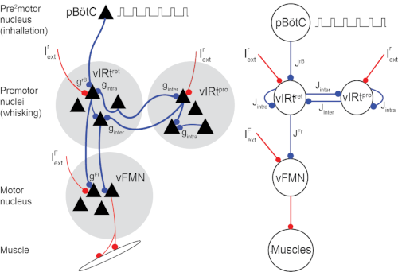

vIRt

David Golomb, Jeffrey D. Moore, Arash Fassihi, Jun Takatoh, Vincent Prevosto, Fan Wang and David Kleinfeld, Theory of hierarchically-organized neuronal oscillator dynamics that mediate rodent rhythmic whisking. Neuron, 2022. DOI: 10.1016/j.neuron.2022.08.020